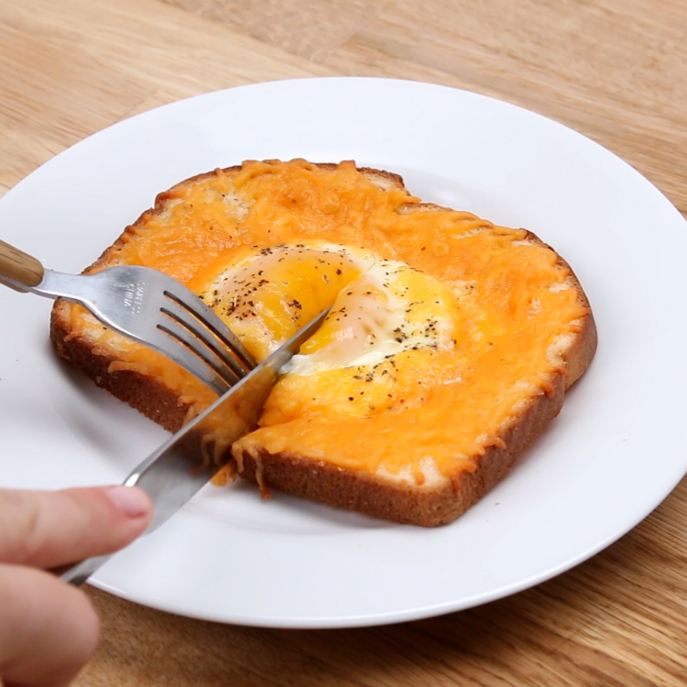

Cheesy Egg Toast Perfect For Breakfast

Description
Upgrade your breakfast game with this mouthwatering Cheesy Egg Toast! It's the perfect combination of gooey cheese and fluffy eggs, all nestled on a crispy slice of toast. Say goodbye to boring breakfasts and hello to this scrumptious morning delight!
Ingredients
- 1 slice bread
- ½ tablespoon butter
- 1 large egg
- 3 tablespoons shredded cheese
- kosher salt, to taste
- freshly ground black pepper, to taste
Steps
- Preheat the oven or a toaster oven to 400°F (200°C).
- With a spoon, press down on the center of the bread to form a pocket. Spread the butter around the edges of the bread, then crack the egg into the pocket.
- Sprinkle the cheese around the egg, then season with salt and pepper.
- Bake the toast for 10–15 minutes, depending on how runny you like the yolk.
- Serve immediately.
- Enjoy!